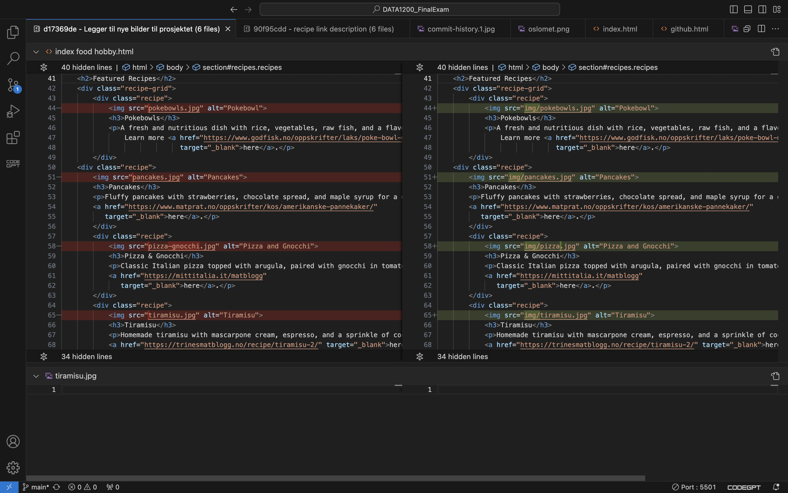
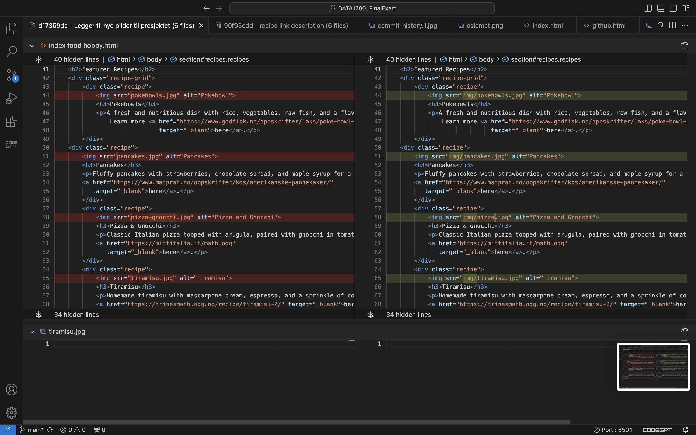

GitHub Collaboration
Collaboration in Repositories Using GitHub
Github is a powerful platform for team projects, offering tools for version control and collaboration withing a shared repository. During the DATA1200 home exam, we utilized Github to organize website development efficiently. Each team member worked on dedicated branches, minimizing conflicts and encouraging recular commits. Branching and merging features enabled smooth integration into the main repository, while the commit history maintained transparency and accountability.
Challenges and Learning Curve
For some team members, this was their first experience with GitHub, which required learning features like branching and pushing changes. Early on, we avoided direct commits to the main branch to prevent disruptions. Over time, tools like Github Desktop and Visual Studio Code simplified the process, boosting confidence and efficiency.
Commit history
Commit history helps developers track changes, understand the evolution of a project, and ensure accountability in teamwork. Below are examples of commits made during our project:

Specific changes
GitHub´s tools allow developers to review specific changes between commits, making it easier to maintain high-quality code. Examples of specific changes are shown below:
 Benefits of GitHub
- Brancing: Enabled independent work and smooth integration.
- Commit History: Provided transparency and accountability
- Collaboration tools: Features like pull requests and issue tracking streamlined communication.
- Accessibility: Centralized storage ensured easy access to the latest project version
Reference: Code Institute. (n.d.). How GitHub might benefit you. Retrieved november 18. 2024, from: https://codeinstitute.net/global/blog/github-might-benefit-using/
Reflection
Despite initial challenges, Github´s tools supported a structured workflow, boosting our confidence in collaborative development. This experience has prepared us for future projects by solidifying GitHub´s role as an invaluable resource for teamwork.